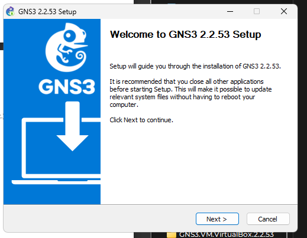
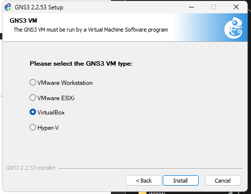
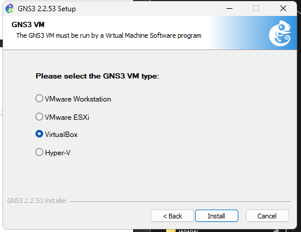
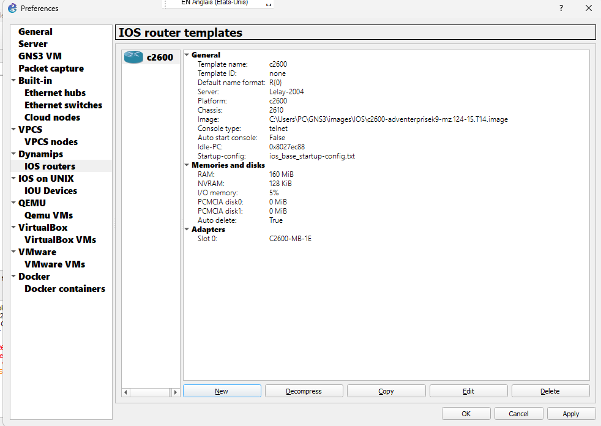
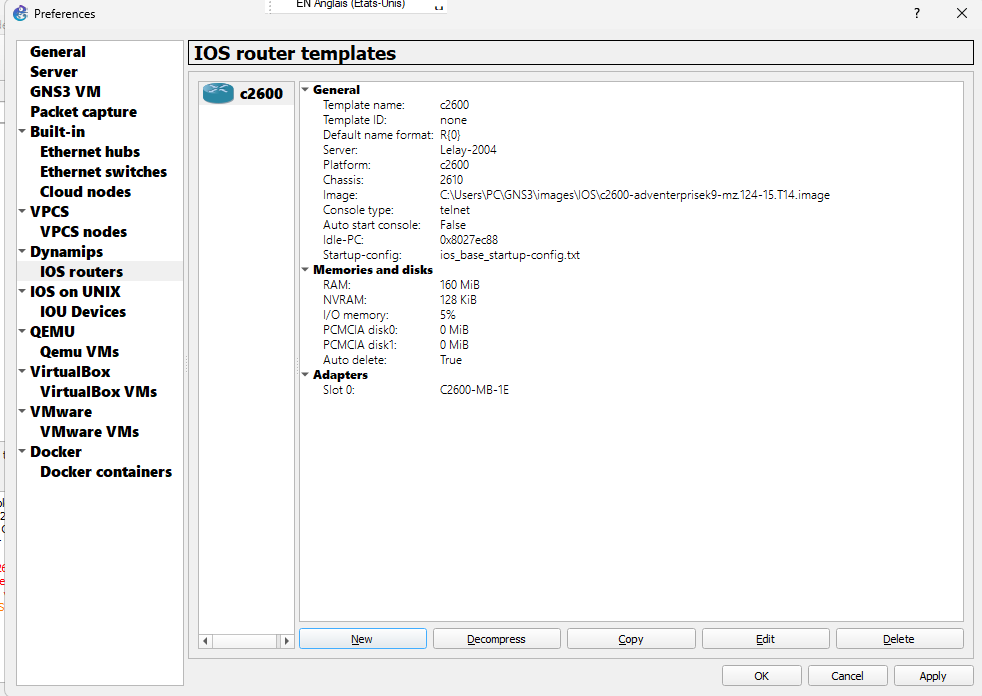
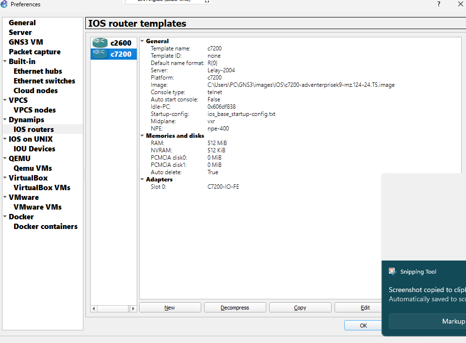
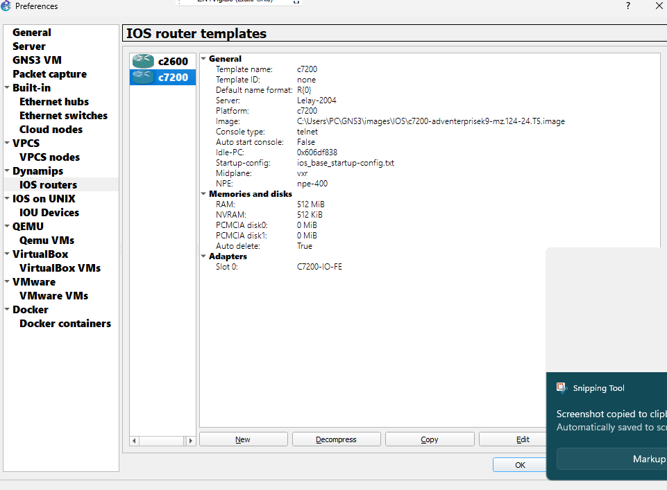
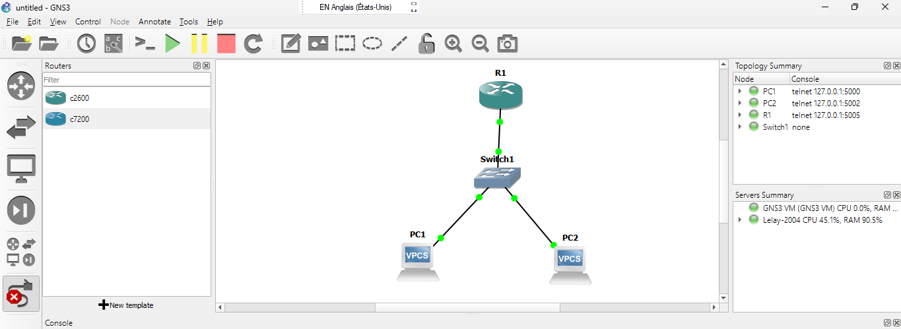

Institut Universitaire des Sciences (IUS)
Faculté des sciences et de technologies
Td2 - Réseau 2
Préparé par :
Nom : BYRON
Prenom : Pierre Durell Naguiby
Niveau : L3-Sciences Informatiques

Nom : BYRON
Prenom : Pierre Durell Naguiby
Niveau : L3-Sciences Informatiques
  
 


 
  

topologie 
Configuration Routeur 
configuration des PCS
PC1 
PC2 
Test de la connexion 
topologie 
Configuration Routeur 
configuration des PCS
PC3 
PC4 
PC5 
PC6 
En conclusion, ce TD me permet d’installer GNS3 et l’importer sur une marchine virtuelle (VMware Workstation), il me permet aussi d’ajouter des images de routeurs Cisco, de faire des simulations avec des topologies en configurant des routeurs et des PCS.